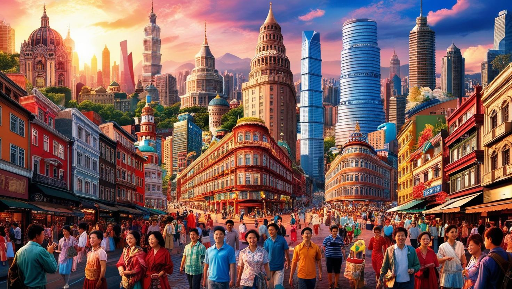
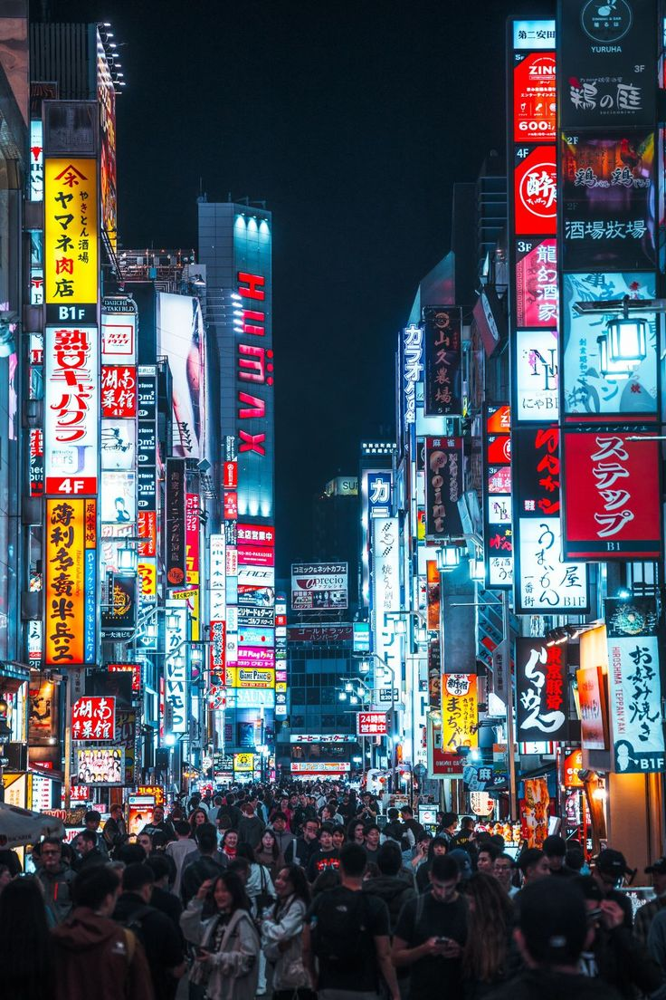

Orașe de explorat
Orașele sunt inima culturală, economică și socială a lumii moderne. Fiecare metropolă are o personalitate distinctă, o poveste de spus și o atmosferă aparte. De la agitația orașelor asiatice până la eleganța europeană sau spiritul artistic al Americii Latine, descoperirea orașelor este o aventură în sine. Fiecare colț de stradă, clădire istorică sau piață animată oferă o experiență diferită și captivantă.

Dacă vrei ceva mai neobișnuit, încearcă să explorezi orașe mai puțin cunoscute, dar la fel de fascinante: Porto în Portugalia, Lviv în Ucraina, Luang Prabang în Laos sau Valparaíso în Chile. Aceste destinații oferă o combinație ideală între autenticitate, prețuri accesibile și experiențe locale autentice.
Când vizitezi un oraș, încearcă să îl cunoști dincolo de atracțiile turistice clasice. Pierde-te pe străduțele înguste, gustă preparate tradiționale din piețele locale, participă la un eveniment cultural sau stai de vorbă cu localnicii. Astfel vei înțelege cu adevărat ritmul orașului și îi vei simți sufletul.
Orașele sunt și centre ale diversității. Vei întâlni oameni din toate colțurile lumii, vei auzi limbi diferite și vei simți cum globalizarea a creat spații în care culturile se împletesc armonios. De asemenea, infrastructura modernă a multor orașe face călătoria mai ușoară și mai plăcută: transport public eficient, aplicații utile pentru turiști, rețele Wi-Fi gratuite și ghiduri interactive.
Indiferent dacă preferi să te plimbi pe bulevardele largi ale unei capitale sau să te pierzi în atmosfera boemă
a unui oraș de provincie, explorarea urbană este o călătorie care merită făcută. Orașele sunt vii, pulsante și
mereu în schimbare. Descoperă-le cu ochii larg deschiși și cu inima pregătită să fie surprinsă!